반응기 설계 프로젝트 (차세대 지속가능항공유(SAF) 생산공정 설계)-2 참고논문 분석
저번 요약:
일단 상황을 정리해보면, 나는 SAF 공장을 운영하는 공장장 역할로, 어떤 SAF 제조경로를 골라서 ‘반응기 중심’으로 공정을 설계하고, 돈 되는지까지 계산하는 것이 주어진 과제이다.
해야하는 것 정리:
SAF 생산경로 하나 선택-> 논문으로 핵심 데이터 확보->그 데이터로 반응기 설계-> 운영비(원료+에너지)만으로 생산단가(원/톤) 계산-> 상용 항공유 또는 상용 SAF랑 경제성 비교 + 토론
따라서 먼저 생산경로 중에서 ATJ(Alcohol-to-Jet)를 선택하기로 하였다. 이에 대한 핵심 논문으로, Process simulation and economic evaluation of the Alcohol-to-Jet production of sustainable aviation fuel in the Brazilian context을 선정하였다.
이 논문은 에탄올(브라질 맥락)을 원료로 SPK-ATJ 공정을 Aspen Plus로 전체 시뮬레이션하고, 경제성 평가(브레이크이븐 가격/민감도)까지 붙인 논문이다. 이 논문을 이번 포스팅에서 분석해볼 예정이다.
----------------------
0.초록
현재 항공 시장 상황에서 지속 가능하고 탄소 배출량이 적은 대안에 대한 수요가 증가하고 있습니다. 이러한 배경에서 본 연구는 에탄올을 원료로 하는 알코올-제트 연료(Alcohol-to-Jet) 기술을 이용하여 브라질에 바이오 제트 연료 생산 공장을 건설하는 타당성을 평가하는 것을 목표로 했습니다. 해당 공정은 Aspen Plus를 사용하여 시뮬레이션했습니다.®v12.1 버전을 사용하여 경제성 분석을 수행했습니다. 다양한 시나리오에서 바이오 제트 연료와 에탄올의 손익분기점을 산출했습니다. 최적의 시나리오에서 바이오 제트 연료는 kg당 1.86달러로, 미국에서 시판되는 평균 가격의 지속 가능한 항공 연료보다 31% 저렴합니다. 또한 에탄올 가격이 44~55% 인하될 경우, 경쟁력 있는 시장 가격으로 기존 항공 연료를 대체하는 데 있어 해당 공정이 경제적으로 타당하다는 것을 입증했습니다. 이는 코로나19 팬데믹 이 전 수준을 고려할 때 실현 가능한 수준입니다. 이러한 결과는 해당 공정 기술이 향후 정책 수립에 중요한 대안으로 고려되어야 함을 시사 하며, 향후 연구의 기초 자료로 활용될 수 있고, 필요에 따라 다른 경제 환경에도 쉽게 적용할 수 있습니다.
1.서론
최근 몇 년 동안 과학계와 정부 지도자들은 이산화탄소가 환경에 미치는 영향에 대해 점점 더 우려 -> 항공사들은 "배출량 감축"에 전념 중 -> 핵심 전략 중 하나는 석유에서 추출한 기존 항공유(Jet A-1)와 항공 휘발유 대신 바이오 연료를 사용하는 것 -> 브라질에서는 주로 연료 부문에 사용되는 에탄올이 국가 경제에서 중요한 역할을 차지. 따라서 에탄올을 바이오항공유 산업과 같은 다양한 생산 사슬과 연계할 수 있는 기회가 많다. -> 여러 참고 자료들을 통해, 특히 사탕수수에서 에탄올을 생산하고, 1차 및 2차 생산 공정을 모두 숙달했으며, 매우 경쟁력 있는 가격으로 공급할 수 있는 잘 구축된 유통망을 갖춘 국가에서 생산될 경우, 에탄올 기반 ATJ(아세트아미노펜)는 유망해 보인다는 것을 알 수 있습니다. 따라서 본 논문은 기존의 ATJ 경제성 평가를 브라질 상황에 맞춰 업데이트한다는 점에서 중요한 기여를 합니다.
본 연구의 목적은 에탄올로부터 바이오 제트 연료(지속 가능한 항공 연료, SAF)를 생산하는 공정 시뮬레이션 연구를 제시하고 브라질 시나리오에서 경제성을 평가하는 것.
이 방법은 최근 ASTM의 승인을 받았으며, 이미 산업적으로 적 용되고 있는 다른 공정들에 비해 상대적으로 연구가 덜 진행된 상태입니다. 시뮬레 이션 데이터와 경제적 가정은 본 논문에 자세히 기술되어 있으므로, 향후 연구에서 다른 맥락에 적용하거나 활용할 수 있습니다. 기존 연구들은 종종 에탄올 기반 제트 연료(ATJ)를 다른 화학 물질 생산과 연관시키거나 상세한 시뮬레이션 보고서 없이 경제성 분석에만 초점을 맞추는 경향이 있었는데, 본 연구는 이러한 기존 연구들과는 차별화됩니다
2.문헌 고찰
바이오연료는 기존 항공기 기종과의 호환성 및 항공 등유와의 최대 혼합 비율을 충족하기 위해 미국재료시험학회(ASTM)의 ASTM D1655 규격에 따라 인증을 받아 야 합니다. 또 2009년부터는 ASTM D4054 규격을 활용하여 여러 단계를 거쳐 최종 승인을 받는 새로운 바이오연료 승인 절차에 대한 체계를 마련할 수 있게 되었 습니다.[21]ANP에 따르면, 최신 ASTM D7566 표준에 따라 현재까지 SPK-HEFA, CHJ, SIP, SPK-FT, SPK/A-FT(피셔-트로프쉬 공정으로 합성된 수소처리 파라핀계 등유) 및 SPK-ATJ 경로를 통해 합성된 바이오 연료만이 기존 항공 연료와 혼합하여 사용할 수 있도록 인증되었습니다.
-> 바이오 연료를 생산하는 경로는 지정되어있음. 이 중에서 SPK-ATJ 경로가 우리가 하려는 것.
ATJ 공정은 알코올을 원료로 사용합니다. 이 공정에서 기존 방식은 원료의 탈수 반응을 통해 불포화기를 형성하고, 이어서 올리고머화 반응을 통해 탄소 사슬을 증가시킨 후, 수소화 반응을 통해 이러한 불포화기를 분해하고, 마지막으로 분별 증류 단계를 거치는 것입니다.
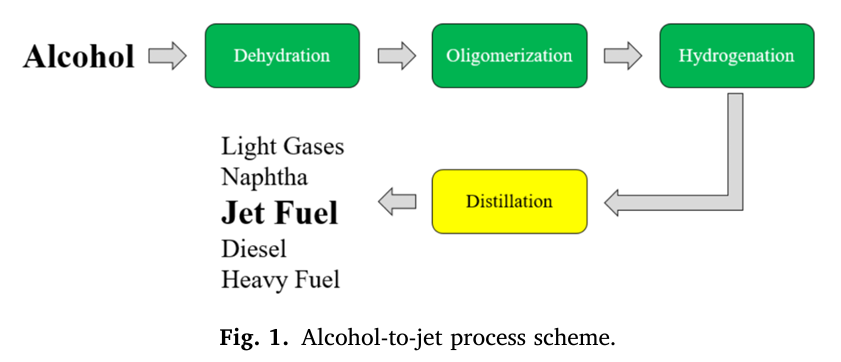
2.2.1. 탈수
탈수 반응은 ATJ 공정의 첫 번째 반응 단계입니다. 이 단계에서 알코올은 물 분자가 제거되면서 알켄으로 전환됩니다. 에탄올을 에텐으로 전환하는 촉매 탈수 반응 은 기존 석유 정제 공정의 대안으로 오랫동안 광범위하게 연구되어 왔습니다. SAPO 유래 제올라이트, H-ZSM-5, 산성 수지, 전이 금속 산화물, 그리고 주로 알루미나와 같은 다양한 산 촉매가 이 공정에 사용되어 왔는데, 이는 이러한 촉매들이 제조가 용 이하고 99%에 가까운 전환율과 높은 에텐 선택성을 나타내기 때문입니다.
에탄올 to 에틸렌
2.2.2. 올리고머화
탈수 단계 후, 생성물은 올리고머화 과정을 거쳐야 하며, 이 과정에서 탄소 사슬 이 길어집니다. 이는 다음에서 확인할 수 있습니다.
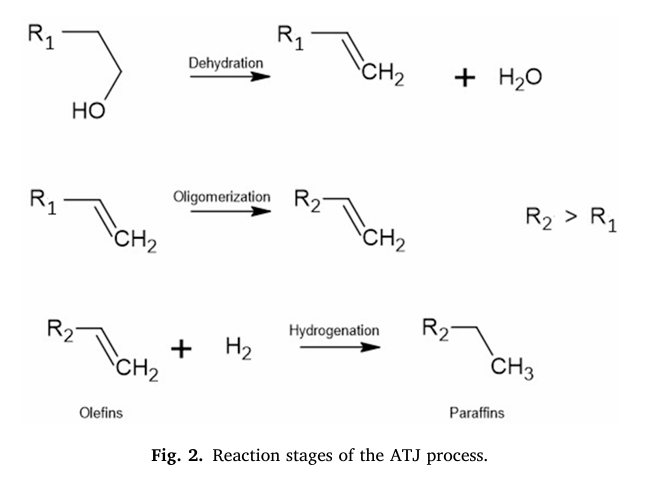
항공유의 지정된 범위 내 성능을 달성하기 위해서는 제올라이트, 지글러-나타 촉매, 니켈 및 인 결합제를 포함 하는 촉매와 같은 산 촉매를 사용하여 여러 단계의 공정을 수행해야 할 수도 있습니 다.[29]단 한 번의 올리고머화 단계만으로 에텐의 높은 전환율을 달성할 수 있으나 C 1-C 4 carbon chains,에 대한 선택성이 더 높아집니다.이는 항공 연료에 바람직하지 않은 탄소 사슬입니다.[15]. 올리고머화 과정은 긴 탄소 사슬 생성을 저해할 수 있는 여러 요인의 영향을 받 습니다. 일부 연구에서는 올리고머화 반응과 사슬 분해 반응 간의 경쟁이 보고되었 습니다. 긴 사슬 생성물의 형성은 높은 반응 온도와 촉매의 넓은 산성 표면적에 의해 촉진됩니다. 그러나 이러한 요인들은 동시에 분해 반응과 코크스 생성을 촉진하기도 합니다. 또한, 반응 매질에 물이 존재하면 경질 올레핀 생성이 촉진되어 불균일 촉매 의 산성 부위를 변화시킴으로써 올리고머화 반응과 분해 반응 모두를 약화시킵니다. [30]이와 관련하여 Liu et al.의 연구와 같이 제트 연료 생성을 향상시키는 전략을 보고한 연구들이 있습니다.[31]부탄올을 사용하여 바이오에탄올을 제트 연료 전구 체로 전환하는 과정을 연구했으며, 특히 탈수 및 올리고머화 반응에 초점을 맞췄습 니다. 베타-에 포스포텅스텐산(HPW)을 사용하면 제올라이트(Hβ) 촉매를 사용했을 때, 특정 n-부탄올 대 n-헥산올 비율에서 연료 전 구체에 대한 선택도가 59.5%로 최적의 성능을 나타냈다. 에탄올에 대한 연구는 제 한적이지만, 이러한 결과는 에탄올을 사용하여 전환율을 향상시킬 수 있는 상당한 잠재력을 시사한다. 현재 시판 중인 에틸렌 올리고머화 공정은 Chevron Phillips Chemicals, Ethyl, Shell, PNNL의 네 가지가 있습니다. Chevron 공정은 저농도 Ziegler Natta 균일 촉매를 사용하는데, 이 촉매는 재활용이나 재사용이 불가능하고, 사용 후 알루민산나트륨으로 전환하여 폐기합니다. INEOS가 운영하는 Ethyl 공정은 Ziegler Two-Step 공정을 기반으로 하며, Chevron 공정과 달리 에틸렌에 대해 화 학량론적 양의 촉매를 사용하고, 이 촉매는 재생 및 재사용됩니다. 세 번째 공정은 Shell이 개발했으며, 니켈 및 인 리간드 균일 촉매를 사용합니다.[29,31]PNNL 기 술은 LanzaJet이 채택한 기술로, 다기능 촉매를 적용하여 필요에 따라 재생 가능한 디젤 혼합 생산으로 전환할 수 있다는 장점이 있습니다.[24]. 문헌에 보고된 대부분의 올리고머화 연구는 재생 가능한 디젤 생산에 초점을 맞 추고 있다는 점을 강조할 필요가 있습니다. 그러나 참고 문헌에 제시된 연구들은 운 전 조건의 미세한 조정만으로도 각 올리고머 분획의 비율이 달라져 바이오 제트 연 료 생산에 영향을 미칠 수 있음을 시사합니다. 따라서 향후 연구에서는 SAF 생성량 을 향상시키기 위해 반응 조건을 최적화하거나, 이를 위한 공정 시뮬레이션 연구에 적용할 수 있는 반응 속도 모델을 개발하는 것이 바람직합니다
2.2.3. 수소화 반응
수소화 반응은 ATJ 공정의 마지막 반응 단계입니다. 이 단계에서 올리고머화 반응으로 생성된 올레핀의 이중 결합이 수소화되어 포화됩니다. 이 공정은 연료의 반응성을 낮추기 위해 석유화학 산업에서 널리 사용됩니다. 이 반응에는 니켈, 백금 또 는 팔라듐 기반의 금속 촉매가 필요하며, 특히 라니 니켈 촉매는 가격이 저렴하여 산 업 현장에서 더 많이 사용됩니다.[22]매체는 370℃의 수소 분위기에 노출됩니다.◦ C, 3시간−1WHSV는 수소화 공정에서 5% Pd/C 또는 5% Pt/C를 촉매로 사용합니 다.[33,34]보고에 따르면, 수소처리 단계에서 팔라듐과 백금 담지 촉매 외에도 활성 탄에 담지된 코발트-몰리브덴 촉매(CoMo)를 사용하여 남아있는 이중 결합을 포화 시킬 수 있다고 합니다.[13]. 따라서 수소는 ATJ 공정의 두 번째 원료입니다. 이 공정이 완전히 지속 가능하려 면 수소는 물 전기분해 또는 바이오매스로부터 생산되는 재생 가능 원료여야 합니 다. 올레핀을 파라핀으로 완전히 전환하기 위해 반응기에 잉여 수소가 공급됩니다. 이러한 잉여 수소로 인해 기체-액체 분리 및 후속 재압축 단계를 거쳐 이 장치에서 수 소 재순환 흐름을 고려하는 것이 중요합니다.[15]
2.2.4. 증류
표시된 세 가지 반응 단계 이후에그림 2탄화수소 흐름은 분리 단계를 거쳐야 합니다. 증류탑을 사용하면 흐름을 경질 가스, 나프타, 가솔린, 바이오 제트 연료, 디젤 및 중질 연료유로 분리할 수 있습니다.[13].
2.3. 방법론
본 연구에서는 Aspen Plus를 이용하여 ATJ 공정의 시뮬레이션을 수행하였다. ®v12.1 공정 시뮬레이터. 이전 섹션에서 설명한 공정 경로와 생산 능력이 확인되면 시뮬레이션 환경 준비가 시작됩니다. 이 과정에는 구성 요소 정의 및 열역학 패키지 선택이 포함됩니다
2.4. 시뮬레이션 방법론
2.4.1. 생산 능력
현재 브라질에는 지속 가능한 ATJ 산업 생산이 이루어지지 않고 있습니다. 따라서 본 연구에서 시뮬레이션할 플랜트의 생산 능력을 결정하기 위해, 페트로브라스의 바이오 리피노 프로그램 전략 계획에 제시된 플랜트 건설 시나리오를 기반으로 가정을 세웠습니다.
1. 하루 6,000배럴의 바이오 제트 연료 생산을 목표로 합니다.
6,000 bbl/day 이고 1 bbl = 158.987 L
- 시간당 배럴: 6000/24= 250 bbl/h
- 시간당 리터: 250×158.987≈39,746.8 L/h
2. 연간 11개월, 하루 24헥타르 규모로 가동할 경우 시간당 39,747리터의 생산 능력이 됩니다.
3. 브라질 석유·천연가스·바이오연료청(ANP)은 바이오 연료의 밀도 범위를 765~780kg/m³로 규정하고 있습니다
4. 따라서 해당 공장의 바이오 제트 연료 생산 능력은 평균 시간당 30,704kg이 될 것입니다.
(765+780)/2= 772.5 kg/m3 . 즉 39,747 L/h = 39.747 m3/h = 39.747 m3/h * 772.5 kg/m3 = 30,704 kg/h
2.4.2. 구성 요소
이 시뮬레이션에 사용된 화학 성분에는 에탄올 외에도 탈수, 올리고머화, 수소화 라는 세 가지 대표적인 반응의 생성물이 포함됩니다. 탈수 단계에서는 에탄올, 에틸렌, 물이 생성됩니다.[38]올리고머화 반응에서 생성되는 생성물은 알켄 사슬입니다. [39]참고 문헌에서는 사슬이 어느 탄소에서 올리고머화되는지 명시되어 있지 않지만, 에틸렌의 올리고머화로 선형 알파올레핀이 생성된다는 연구 결과가 있다는 점에 유의해야 합니다.[32]따라서 이러한 물질들은 시뮬레이션에서 그대로 고려되었습 니다. 최종 반응 단계에서는 올리고머화된 알켄으로부터 유래된 알칸이 생성되며 수소가 필요합니다. 이 시뮬레이션에 사용된 모든 구성 요소는 소프트웨어 데이터베이 스에서 찾을 수 있다는 점에 주목할 필요가 있습니다.
이 문단은 “Aspen 시뮬레이션에 등장하는 물질(성분 리스트)를 어떻게 정했는가”에 대해서 말해줘.
1. 시뮬레이션 성분은 에탄올만 넣는 게 아니라, 공정에서 대표적으로 일어나는 **3개 반응(탈수·올리고머화·수소화)**의 생성물까지 전부 포함해서 잡았어.
2. 탈수(dehydration) 단계에는 딱 3개가 있다고 둠: 에탄올(ethanol), 에틸렌(ethylene), 물(water).
3. 올리고머화(oligomerization) 단계에서 생성물은 “알켄(올레핀) 사슬”이라고만 되어 있는데,
여기서 중요한 점: 참고한 문헌이 **사슬이 정확히 어느 탄소에서 어떻게 자라는지(결합 위치/구조)**를 명확히 안 적어놨대.
4. 그래서 논문은 다른 연구 근거를 붙여서, 에틸렌 올리고머화 결과가 **linear alpha-olefins(직쇄 α-올레핀)**으로 나올 수 있다는 걸 받아들이고, 시뮬레이션에서는 올리고머화 생성물을 “직쇄 α-올레핀 형태”로 가정해서 넣었어.
5. 마지막 수소화(hydrogenation) 단계는: 올리고머화로 생긴 알켄(올레핀)을 **알케인(포화 탄화수소)**으로 바꾸는 반응이고, 이때 수소(H₂)가 필요하다고 말해.
6.그리고 실무적으로 “Aspen에 그 물질들이 있냐”가 중요한데, 논문은 사용한 성분 전부가 Aspen 데이터베이스에 존재한다고 확인해 줘.
이 설계(시뮬레이션)에서 쓰인 “반응식” 한 번에 싹 정리
1) 탈수(Dehydration)
에탄올 → 에틸렌 + 물
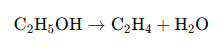
2) 올리고머화(Oligomerization)
에틸렌들이 붙어서 C4, C6, C8, C10, C12 … 같은 “올레핀 사슬”을 만든다고 두는 것.
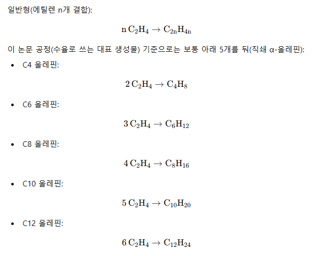
3) 수소화 (Hydrogenation, 올레핀 → 알케인)
일반형: C(2n)H(4n) + H2 → C(2n)H(4n+2)
위 5개 대응:
C4H8 + H2 → C4H10
C6H12 + H2 → C6H14
C8H16 + H2 → C8H18
C10H20 + H2 → C10H22
C12H24 + H2 → C12H26
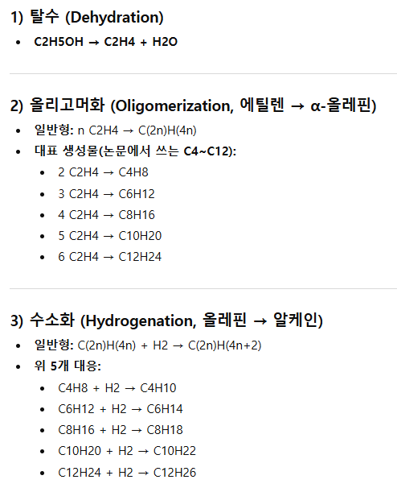
2.4.3. 열역학 패키지
열역학 패키지 선택은 공정 시뮬레이션에서 가장 중요한 요소 중 하나로, 시스템 특성 예측, 공정 장치 모델링 및 전반적인 공정 성능에 직접적인 영향을 미칠 수 있습 니다. 열역학 패키지를 선택할 때는 형성되는 혼합물의 거동을 고려하는 것이 중요 합니다. 알코올 제트(ATJ) 공정의 경우, 초기 단계에는 극성 및 결합성 물질인 에탄 올과 물이 존재하고, 후기 단계에는 다양한 종류의 탄화수소가 존재한다는 점에 특 히 주의를 기울였습니다. 따라서 본 시뮬레이션에서는 UNIFAC 방법을 사용했으며, 기체상은 Peng-Robinson 방정식을 이용하여 모델링했습니다.[40]또한 Geleynse 등이 수행한 연구와 같이 UNIFAC 열역학 모델을 사용하여 바이오 연료 생산을 시뮬레이션한 유사한 연구들이 있다는 점을 주목할 필요가 있습니다.[15].
2.5. 반응 모델링
ATJ 경로는 탈수, 올리고머화 및 수소화로 알려진 세 가지 반응 단계를 기반으로 합니다. 이 연구에서 재현하는 데 필요한 수준의 세부 정보를 포함하는 전체 공정에 대한 특허나 논문을 찾을 수 없었기 때문에 각 단계의 시뮬레이션에는 개별 참고 문 헌을 사용했습니다
2.5.1. 탈수
이 공정의 탈수 반응은 원료인 에탄올에서 물 분자를 제거하여 에틸렌으로 전환 하는 과정입니다. 이 단계에 대해서는 Coupard et al.의 두 번째 예시를 참조하십시 오.[38] 참고용으로 사용된 조건에서는 에탄올 공급 스트림이 고정층 제올라이트 촉 매가 포함된 두 개의 반응기로 순차적으로 유입되기 전에 온도 및 압력 조정을 거칩 니다. 첫 번째 반응기에서는 에탄올의 71.5%가 에틸렌으로 전환되고, 두 번째 반응 기에서는 98%가 전환됩니다. 에탄올 전환율 계산은 다음 방정식에 설명되어 있습 니다.(1):
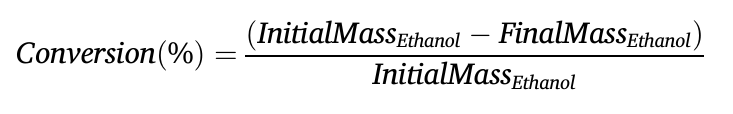
일련의 반응을 거치면 총 99.4%의 전환율이 달성된다고 Coupard 등이 보고했습니다.[38]그리고 along with the other operating conditions 와 함께 표1에 기술된 바와 같이. 반응이 에틸렌을 생성하는 비율과 동일한 비율로 물을 생성한다는 점을 강조하는 것이 중요합니다. 따라서 반응기 출구의 물의 양은 91.9% w/w 에탄올을 함유한 수화 에탄올 스트림으로서 생성된 물과 공급 스트림의 물의 합에서 비롯됩니다.
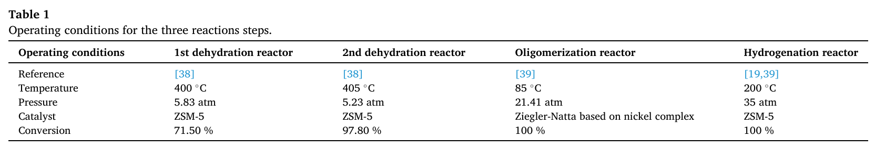
이 표는 **ATJ 공정의 3개 반응 단계(탈수 2기 + 올리고머화 1기 + 수소화 1기)**에 대해, 각 반응기를 어떤 조건(온도/압력/촉매)으로 돌리고 전환율을 얼마로 두었는지 한 번에 정리한 거야.
표 읽는 법 (열/행 의미)
열(가로) = 반응기 종류
- 1st dehydration reactor: 1단 탈수 반응기
- 2nd dehydration reactor: 2단 탈수 반응기
- Oligomerization reactor: 올리고머화 반응기
- Hydrogenation reactor: 수소화 반응기
행(세로) = 조건 항목
- Reference: 이 조건을 가져온 참고문헌 번호
- Temperature: 운전 온도
- Pressure: 운전 압력
- Catalyst: 촉매
- Conversion: 전환율(반응물 중 반응한 비율)
각 반응기 조건(숫자 그대로 해석)
1) 1단 탈수 반응기
- 온도: 400°C
- 압력: 5.83 atm
- 촉매: ZSM-5
- 전환율: 71.50%
→ 들어온 에탄올 중 71.5%가 반응해서(에틸렌+물 생성) 나간다는 뜻.
2) 2단 탈수 반응기
- 온도: 405°C
- 압력: 5.23 atm
- 촉매: ZSM-5
- 전환율: 97.80%
→ 1단에서 남은 에탄올을 거의 다(97.8%) 추가로 반응시키는 “마무리 단계”라고 보면 됨.
참고로 1단+2단을 연속으로 보면, 남는 에탄올 비율은
( (1−0.715)×(1−0.978)=0.285×0.022=0.00627
즉 전체 탈수 총전환 ≈ 99.37% (≈99.4%) 정도로 해석돼.
3) 올리고머화 반응기
- 온도: 85°C
- 압력: 21.41 atm
- 촉매: Ziegler–Natta (nickel complex 기반)
- 전환율: 100%
→ 시뮬레이션에서는 올리고머화 단계 반응물을 “완전 전환”으로 두었다는 뜻.
4) 수소화 반응기
- 온도: 200°C
- 압력: 35 atm
- 촉매: ZSM-5 (표에 이렇게 적혀 있음)
- 전환율: 100%
→ 올레핀을 알케인으로 만드는 수소화도 “완전 전환” 가정.
2.5.2. 올리고머화
올리고머화는 단량체를 올리고머라고 하는 다양한 크기의 사슬로 변환하는 과정입니다. 바이오케로신 ATJ 생산 공정에서 이 단계는 이전 단계에서 생성된 에틸렌 을 앞서 설명한 바와 같이 더 큰 알켄으로 변환하는 과정을 포함합니다. (Heveling 및 Nicolaides 연구 참조)[41]생성된 올리고머와 그 대략적인 질량 수율을 확인할 수 있었습니다: CIS-2-BUTENE 27%, 1-HEX-ENE 17.6%, 1-OCTENE 25%, 1 DECENE 15%, 및 1-DODECENE 15.4%. (Sydora)[42]올리고머화 선택성을 연 구하고 Heveling과 Nicolaides가 보여준 것과 같은 질량 수율을 관찰했습니다. [41]생성물 수율 외에도 반응의 작동 조건은 다음과 같이 설명됩니다.표 1또한 Lilga et al.도 고려합니다.[39]참고 자료로 활용될 수 있는 이유는, 해당 특허가 작 동 조건과 촉매가 수율에 어떤 영향을 미치는지 보여주었기 때문입니다. 이 특허는 2 단계 및 1단계 공정을 포함한 다양한 유형의 올리고머화 시스템을 포괄합니다. 또한 촉매, 공정 유형, 반응 온도, 압력 및 LHSV(액체 시간당 공간 속도)의 차이에 따라 올 리고머의 비율이 어떻게 달라지는지 설명합니다. 일반적으로 달성되는 전환율은 98%에서 100% 범위에 속합니다.[39]
2.5.3. 수소화 반응
수소화 반응은 공정의 마지막 단계로, 이전 단계에서 생성된 불포화 유기 화합물 에 분자 수소를 첨가하는 과정입니다. 이 과정을 통해 최종 생성물(바이오 제트 연 료)에 해당하는 포화 화합물이 생성됩니다. 이 반응 단계를 모사하기 위해, 아래에 설명된 작동 조건을 사용했습니다.표 1이러한 가정은 Romero-Izquierdo 등의 연 구를 바탕으로 이루어졌습니다.[19]또한 이 참고 문헌에서는 반응에서 전환율이 실 질적으로 100%에 달한다는 점이 관찰되었습니다.
2.5 전체에서 제일 중요한 말
- ATJ는 3개 반응(탈수/올리고머화/수소화)로 구성되는데,
이 논문은 3개를 한 번에 “완성 공정”으로 자세히 써 놓은 특허/논문을 못 찾아서,
각 반응 단계마다 참고문헌을 따로 골라서 시뮬레이션 기준을 잡았다고 말해.
2.5.1 Dehydration (탈수) — “에탄올에서 물 1개 떼서 에틸렌 만들기”
- 이 단계 반응은: 에탄올(원료)에서 물 분자 1개를 제거해서 에틸렌으로 바꾸는 반응이라고 설명해
- 이 단계는 Coupard et al. [38]의 두 번째 예시를 기준으로 잡았고, 그 예시에서는:
- 에탄올 공급물을 온도/압력 조건 맞춘 다음,
- 고정층(zeolite 촉매) 반응기 2개를 연속으로 통과시킨다고 해.
- 전환율은 이렇게 둠:
- 1번 반응기에서 **에탄올의 71.5%**가 에틸렌으로 바뀜
- 2번 반응기에서 **(그 반응기에 들어간) 에탄올의 98%**가 에틸렌으로 바뀜
- 전환율 계산식도 논문이 그대로 적어둠(질량기준):
- Conversion(%) = (초기 에탄올 질량 − 최종 에탄올 질량) / 초기 에탄올 질량
- 두 반응기를 연속으로 돌린 “총 전환율”은 **99.4%**라고 말하고(표 1의 운전조건도 같이 참조),
- 여기서 물에 대해 중요한 문장:
- 이 반응은 에틸렌이 생기는 만큼 물도 같은 비율로 생긴다고 강조해.
- 그래서 반응기 출구의 물은
**(반응으로 새로 생긴 물) + (원료에 원래 섞여 들어온 물)**의 합이라고 설명함.
- 그리고 원료는 “무수 에탄올”이 아니라, **91.9 wt% 에탄올인 hydrous ethanol(물 섞인 에탄올)**을 원료로 가정했다고 못 박아.
한 문장 요약:
“에탄올→에틸렌으로 바꾸는데, 물이 ‘부산물’로 생기고, 원료에도 물이 있어서 출구 물은 둘의 합이다.”
2.5.2 Oligomerization (올리고머화) — “에틸렌을 더 긴 올레핀 사슬로 늘리기”
- 올리고머화는 “작은 분자(단량체, monomer)를 여러 개 붙여서 **여러 길이의 사슬(oligomer)**로 만드는 과정”이라고 정의해.
- ATJ에서 이 단계는 직전 단계에서 나온 **에틸렌을 더 큰 알켄(올레핀)**으로 바꾸는 단계라고 말해.
- Heveling and Nicolaides [41]를 근거로, 어떤 올리고머가 만들어지는지와 대략적인 **질량 수율(mass yield)**을 특정함:
- cis-2-butene 27%
- 1-hexene 17.6%
- 1-octene 25%
- 1-decene 15%
- 1-dodecene 15.4%
- Sydora [42]도 올리고머화 선택도를 연구했고, 비슷한 질량수율을 관찰했다고 덧붙여.
- 운전조건은 표 1에 정리되어 있고, 동시에 Lilga et al. [39]도 참고했는데, 이유는:
- 촉매/조건이 바뀌면 위 “올리고머 비율(수율)”이 달라진다는 걸 보여줬기 때문이야.
- 그리고 [39]는 올리고머화 시스템이 여러 형태(2단/1단 등)가 있을 수 있고,
- 촉매, 공정 형태, 반응 온도, 압력, LHSV에 따라 올리고머 비율이 달라진다고 설명한다고 적어.
- 일반적으로 전환율은 98%~100% 범위라고 정리해.
2.5.3 Hydrogenation (수소화) — “이중결합에 H₂ 붙여서 포화시키기”
- 수소화는 마지막 반응 단계이고,
- 직전 단계에서 나온 **불포화 유기물(=이중결합 가진 올레핀)**에
- 분자 수소(H₂)를 추가해서
- 그에 대응하는 **포화 화합물(=제품 biojet fuel 쪽)**을 만든다고 설명해.
- 이 단계 시뮬레이션은 표 1의 운전조건을 가정했고, 그 가정의 근거는 Romero-Izquierdo et al. [19]라고 말해.
- 그리고 그 참고문헌에서 수소화 전환율이 **사실상 100%**였다고 덧붙여.
2.6. 공정 흐름도
이 섹션에서는 공정 흐름도에 대해 설명합니다.사용된 장비와 스트림은 시뮬레이션에 포함되어 있습니다. 부록의 표 A1에서 독자는 여기에 언급된 모든 스트림에 대한 자세한 정보를 찾을 수 있습니다. 보충 자료 표 S1과 표 S2에는 독자는 공정 흐름도에서 해당 공정에 사용된 장비에 대한 설명과 각각의 식별 정보 를 확인할 수 있습니다.그림 3은 Aspen Plus로 작성된 프로세스 흐름도를 보여줍니다.®에탄올로부터 바이오 제트 연료를 생산하기 위한 v12.1 버전입니다.
시뮬레이션은 주변 온도 및 압력( 25 ◦ C and 1 atm )에서 97몰% 에탄올 단일 흐름(흐름 1)으로 시작됩니다. 다음으로, 펌프(B-1)를 사용하여 압력을 5.83 atm 으로 조정하여 첫 번째 반응 단계에 대한 참고 문헌의 조건과 유사하게 만듭니다. 이와 관련하여 유체는 열교환기(T-1)를 통과하면서 온도가 400℃까지 상승합니다.(스트림 2).
공급 원료 전처리(스트림 3) 후, 열교환기(T-2)로 분리된 두 개의 반응기(R-1 및 R-2)가 순차적으로 연결됩니다. 이 반응기들은 RStoic 블록을 사용하여 시뮬레이션 되었습니다. 첫 번째 반응인 탈수 반응은 400 ◦ C and 5.83 atm 의 작동 조건에서 에탄올을 에틸렌으로 71.5% 전환합니다. 중간 열교환기(T-2)는 출구 유체의 온도가 405°C인 상태로 작동합니다. 두 번째 반응기에서는 투입된 에탄올의 97.8%가 에틸렌으로 전환됩니다. 두 반응기의 온도는 Very High Temperature utility available in the process simulator를 사용하여 일정하게 유지됩니다.
반응기 R-2에서 나오는 출구 스트림(스트림 6)은 등엔트로피 압축기(C-1)를 통 과하여 507℃에서 최종 압력이 13.32 atm이 됩니다.◦C. 그런 다음 열교환기(T-3) 를 통과하여 100도까지 냉각됩니다.◦C(스트림 8) 이후 증기-액체 분리 용기(F-1)로 공 급합니다. 이 용기에서 물이 풍부한 스트림은 바닥에서 분리됩니다 (stream 10),이후 에틸렌이 풍부한 스트림이 상단에서 분리됩니다(스트림 9)
다음으로, 에틸 렌이 풍부한 상단 스트림(스트림 9)은 압축기(C-2)에 의해 21.41 atm으로 가압되 고 열교환기(T-4)에 의해 85°C로 냉각됩니다. 흐름(흐름 12)은 두 번째 분리 용 기(F-2)로 이동하여 미반응 에탄올, 잔류수 및 존재하는 기체로부터 에틸렌을 분리 합니다. 단순화를 위해 전체 질량의 약 0.4%를 차지하는 부반응(산화 화합물 및 탄 소 원자가 3개 또는 4개 미만인 화합물)은 이 단계에서 무시했습니다. 분리는 85 ◦ C and a pressure of 21.41 atm 에서 진행됩니다. 그리고 생성물은 두 번째 반응 단계 로 진행됩니다.
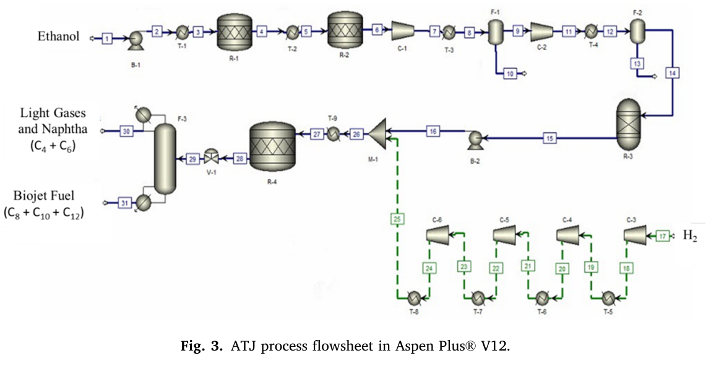
올리고머화 단계에서 스트림 14는 반응기(R-3)로 이동하며, 여기서 반응은 85℃, 21.41 atm 의 온도에서 일어난다.◦ R-3 반응기의 출구 스트림 (스트림 15)은 대략 is approximately composed of fractions of 27 % C4, 17.6 % C6, 25 % C8, 15 % C10, and 15.4 % C12, 에틸렌이 탄화수소로만 전환되는 경우를 고려했습니다. R-3 반 응기는 RYield 블록을 사용하여 시뮬레이션했으며, 온도는 다음 설정을 사용하여 일정하게 유지했습니다.냉각수 유틸리티. 출구 스트림은 펌프(B-2)로 보내져 34.54 atm으로 가압된 다음 믹서(M-1)로 보내집니다.
세 번째 반응 단계 이전에, 이전 흐름(흐름 16)에 더하여 두 번째 흐름(흐름 25) 이 믹서 M-1에 추가됩니다. 이는 가압된 H를 나타냅니다.2이는 주변 온도 25도에서 공정에 투입됩니다.◦스트림 17에서 유입되는 기체는 C의 온도와 1 atm의 압력을 가지며, 스트림 17의 유량은 스트림 16의 반응물 유량을 기준으로 화학양론적으로 정의됩니다. 초기에 스트림 17은 일련의 압축기와 열교환기를 거쳐 최종 압력 34.54 atm까지 압축됩니다. 이 과정은 제어된 온도(40°C)에서 압력이 점진적으로 증가하도록 수행됩니다.◦C) 스트림 16과 25가 혼합된 후, 이들은 열교환기(T-9)로 이동하여 온도를 200℃까지 높입니다.◦C는 다음 반응 단계를 위한 것입니다.
수소화 반응은 최종 반응기(R-4)에서 진행됩니다. 이 반응기는 RStoic 블록을 사용하여 시뮬레이션되었으며, 온도는 특정 기능을 통해 일정하게 유지되었습니다. 냉각수유용성. 수소화 단계에서 Romero-Izquierdo et al.[19]해당 연구를 기반으 로 알켄의 전환율이 100%임을 보고합니다. 수소화 반응 후, 반응기 R-4의 출구 스 트림(스트림 28)에는 27% C의 동일한 질량 분율로 가연성 탄화수소만 포함되어 있 습니다.4, 17.6% C6, 25% C8, 15% C10그리고 15.4% C12
제품 분리는 증류탑(F-3)에서 이루어지며, DSTWU에서 최소 환류비, 최소 단수 및 최적 공급 단수를 결정한 후 RadFrac 블록을 사용하여 이를 모사했습니다. (“지 름길") 블록. 이 단계에서 경질유와 나프타 - C4그리고 C
분획물(스트림 30)은 상단에서 분리되며, 바이오제트 연료는 본 연구에서 C로 가정 됩니다.8, C10그리고 C12분획물(스트림 31)은 바닥에서 회수됩니다. 이 분석에서는 에너지 효율 연구가 수행되지 않았으므로, 향후 연구에서 탐구해 볼 만한 가치가 있음을 유의해야 합니다.
2.6이 뭘 하려는 파트냐
- 이 절은 공정흐름도(Flowsheet), 사용한 장치(equipment), 그리고 **스트림(stream)**을 설명하는 파트야.
- 스트림 상세 수치(온도/압력/조성/유량 등)는 Appendix의 Table A1에 전부 있고, 장치 설명/ID는 보충자료 Tables S1, S2에 있다고 안내해. 그리고 Fig.3이 Aspen Plus v12.1로 만든 공정도야.
1) 원료 투입 ~ 탈수 2단(에탄올 → 에틸렌)까지
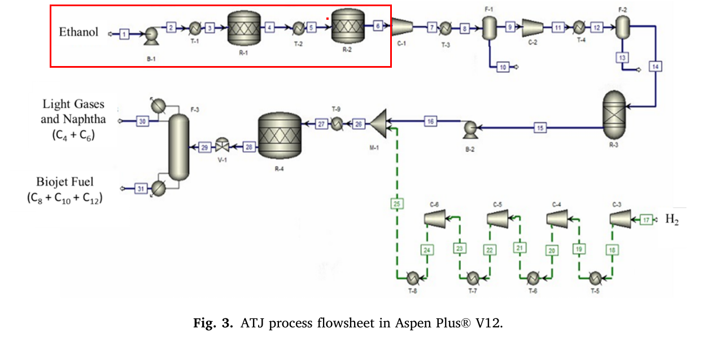
(1) Stream 1: 원료 시작점
- 시뮬레이션 시작은 **97 mol% 에탄올 1개 스트림(stream 1)**이고,
- 조건은 **25°C, 1 atm(상온/상압)**이야.
(2) B-1(펌프): 압력만 올림
- 첫 단계 반응(탈수 1단) 참고문헌 조건에 맞추려고, **펌프(B-1)**로 압력을 5.83 atm까지 올려.
(3) T-1(열교환기): 온도 올림
- 그 다음 **열교환기(T-1)**를 지나면서 400°C까지 가열돼(본문에는 stream 2라고 표시).
(4) R-1 → T-2 → R-2: 탈수 반응기 2개 연속
- “feed conditioning(stream 3)” 이후, **반응기 2개(R-1, R-2)**가 연속으로 있고, 그 사이에 **열교환기(T-2)**가 있어.
- R-1과 R-2는 Aspen의 RStoic 블록으로 모델링했어.
- R-1: 400°C, 5.83 atm에서 에탄올→에틸렌 전환 71.5%
- T-2: 출구 온도를 405°C로 맞춤
- R-2: 들어간 에탄올 기준 97.8%가 에틸렌으로 전환
- 두 반응기 온도는 Aspen 유틸리티 Very High Temperature로 “고정”시켜 유지했다고 명시돼.
2) 탈수 후 정리(물 분리 + 에틸렌 정제/조건맞춤)
(5) C-1(등엔트로피 압축기) + T-3(냉각) + F-1(기액분리)
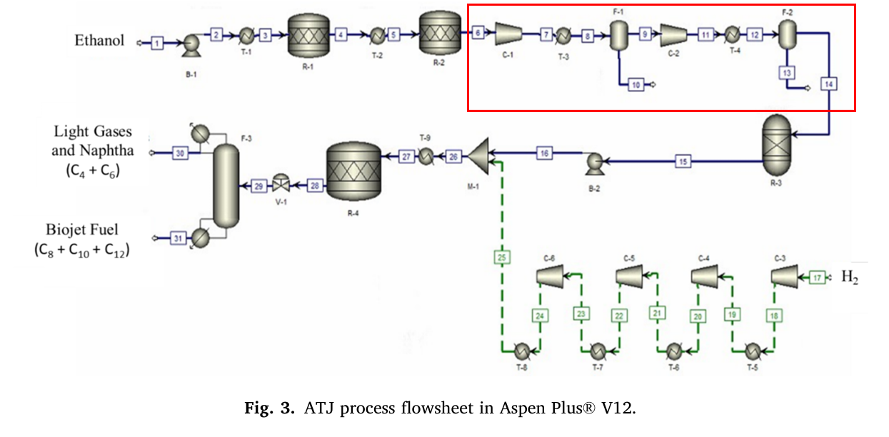
- R-2 출구(stream 6)가 **등엔트로피 압축기(C-1)**를 지나서 13.32 atm, 507°C가 돼.
- 그 다음 **열교환기(T-3)**에서 **100°C(stream 8)**로 냉각한 뒤, **기액분리기(F-1)**로 들어가.
- F-1에서:
- 아래로 **물-풍부한 스트림(stream 10)**이 빠지고,
- 위로 **에틸렌-풍부한 스트림(stream 9)**이 나가.
(6) C-2(압축) + T-4(냉각) + F-2(추가 분리)
- 에틸렌-풍부 스트림(stream 9)을 **압축기(C-2)**로 21.41 atm까지 올리고,
- **열교환기(T-4)**로 85°C까지 내린 다음(stream 12),
- **분리기(F-2)**로 보내서 에틸렌을, 미반응 에탄올/남은 물/가스와 분리해.
- 여기서 논문이 “단순화”를 하나 함:
- 전체 질량의 약 0.4% 정도에 해당하는 **부반응 생성물(산화물, 탄소수 3~4보다 작은 사슬 등)**은 이 단계에서 무시했다고 적어.
- F-2 분리는 85°C, 21.41 atm에서 진행되고, 분리된 “제품(=다음 반응으로 갈 에틸렌 쪽)”이 2번째 반응 단계(올리고머화)로 넘어간다고 말해.
3) 올리고머화(에틸렌 → C4~C12 올레핀) + 압력 올리기
(7) R-3(올리고머화 반응기)
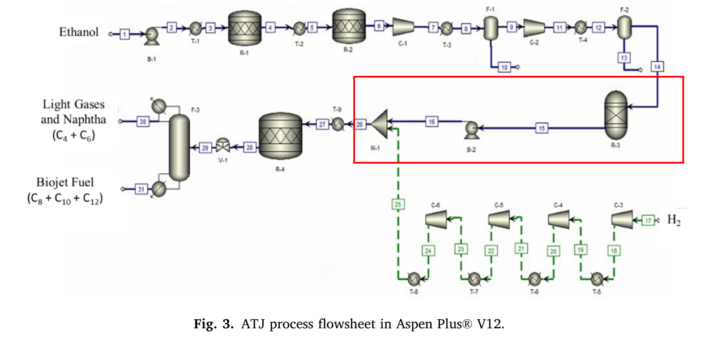
- 올리고머화 단계에서 stream 14가 R-3로 들어가고,
- 반응 조건은 85°C, 21.41 atm이야.
- R-3는 RYield 블록으로 모델링(= “수율로 제품 분배” 방식)했고, Cooling Water 유틸리티로 온도를 일정하게 유지했어.
- R-3 출구(stream 15) 조성은(에틸렌이 탄화수소로만 간다고 보고) 대략:
- C4 27%, C6 17.6%, C8 25%, C10 15%, C12 15.4%
(8) B-2(펌프): 34.54 atm까지 가압 → M-1(믹서)로
- R-3 출구는 **펌프(B-2)**로 34.54 atm까지 올린 뒤, **믹서(M-1)**로 보낸다.
4) 수소(H₂) 투입 라인 + 수소화(올레핀 → 알케인)
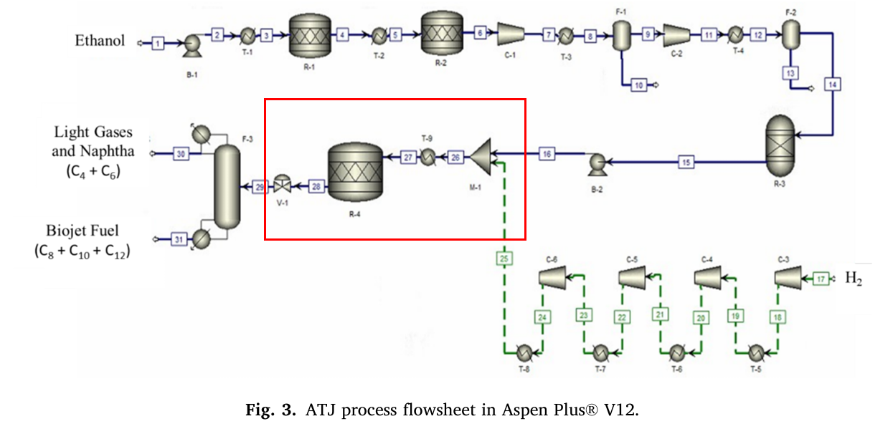
(9) H₂ 스트림(17) 압축/온도관리 → 스트림(25)로 합류
- 수소화 반응 전에, 기존 스트림(stream 16) 말고 **추가 스트림(stream 25)**를 믹서(M-1)에 더해.
이게 가압된 H₂이고, 공정에는 **stream 17(25°C, 1 atm)**로 들어온다고 써 있어. - H₂ 유량은 stream 16의 반응물 유량을 기준으로 ‘화학양론적으로(stoichiometrically)’ 정했다고 명시돼.
- stream 17은 여러 단계의 압축기+열교환기를 거쳐 최종 34.54 atm까지 올리는데,
- 압력을 “한 번에” 올리는 게 아니라 점진적으로 올리고,
- 온도는 40°C로 제어하면서 올린다고 적어.
- (10) T-9로 200°C 가열 → R-4 수소화
- stream 16 + stream 25를 섞은 뒤, **열교환기(T-9)**에서 200°C로 올려서 다음 반응기로 보낸다.
- 수소화는 마지막 반응기 R-4에서 일어나고,
R-4는 RStoic 블록으로 모델링했으며 Cooling Water로 온도를 일정하게 유지했어 - 수소화 전환은 올레핀 100% 전환으로 두었고(근거: Romero-Izquierdo et al.),
- 반응 후 R-4 출구(stream 28)는 “연소 가능한 탄화수소만&rdquo